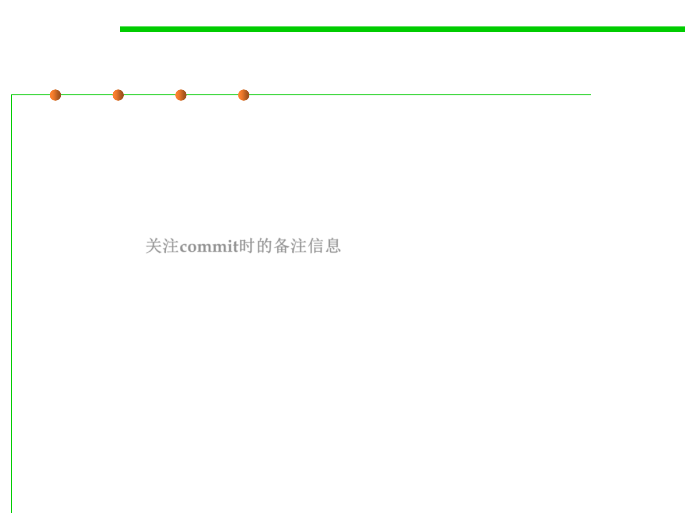

7.4 Debugging
Diagnosis stratagem 3: Leveraging VCS 利用版本控制系统
▪ Occasionally, a bug in functionality that used to work correctly but
was broken by some subsequent change. To this kind of problem,
there is one tool of particular value when regression hunting—
source control system.
– The first step is to review check-in comments—it may be that the culprit is
obvious. 关注commit时的备注信息
– If not, however, you can quickly pinpoint the change using the following
procedure.
• E.g., Imagine that you know that the bug wasn’t present in version 2.3, but it is
present in the current version, 3.0. In between 2.3 and 3.0 are 200 different check-
ins.
• You know the drill by now—check out and build the middle revision, and see
whether the bug is present. If not, it was introduced by a more recent change;
otherwise, it was one of the earlier ones. A few iterations later, and you know
exactly which change it was. -- binary chop
▪ Git source control system provides direct support for it in the form
of the git bisect command (“Wolf fence” ) 二分查找